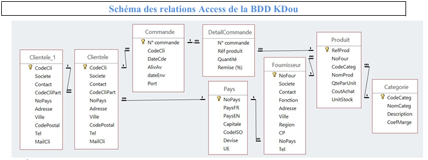

SAE S1.04 – Conception et interrogation d’une base de données
Notre équipe a étudié la base de données de KDou, qui est une entreprise d’épicerie fine, pour l'aider à améliorer sa rentabilité et son image « éco-friendly ».
Contexte
KDou achète des produits d’épicerie fine auprès de fournisseurs du monde entier et les vend à des clients situés en France. L’entreprise s’interroge sur sa rentabilité, son positionnement face à ses concurrents et souhaite renforcer son image éco-responsable.
Missions réalisées
- Étudier la base de données. Analyse des tables (Clientele, Commande, DetailCommande, Produit, Fournisseur, Pays, Categorie) et de leurs liens.
- Analyser les données. Requêtes SQL d’exploration, puis quatre indicateurs : origine des produits, santé, offre commerciale et partenariat client.
- Proposer des indicateurs. Chaque membre de l’équipe a conçu une requête utile à KDou.
Explorer les résultats
La base de données

Équipe de projet
- Maël ZOU
- Achref MEDJAHED
- Enzo SLIMANI
- Rodrigo CUNHA DA SILVA